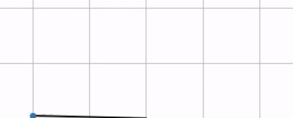
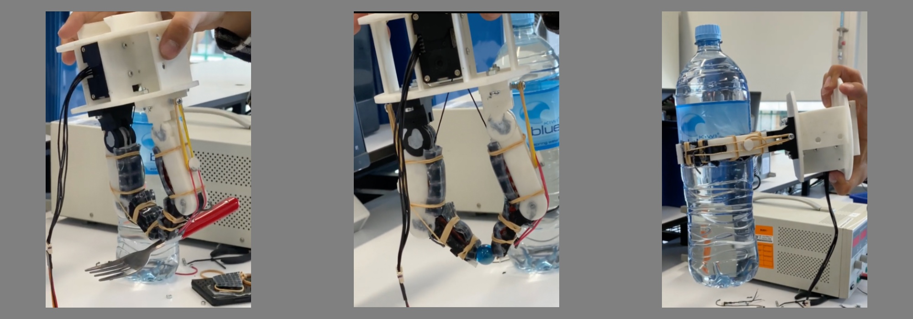

Projects

Re-implementation of LoFTR in TensorFlow
Rohan Gangakhedkar, Fady Algyar, Miles Kilcourse, Suraj Reddy
New York University

Optimized Image Stitching in Python
New York University

Optimal control of a drone using an iterative Linear-Quadratic Regulator
New York University

Inverting a Pendulum with model-free reinforcement learning (Q-Learning)
New York University

\
Design and Development of a Dexterous Manipulator
Rohan Gangakhedkar, Furqan Mahmood, David Park
The University of Auckland